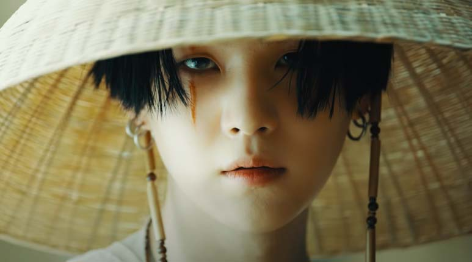
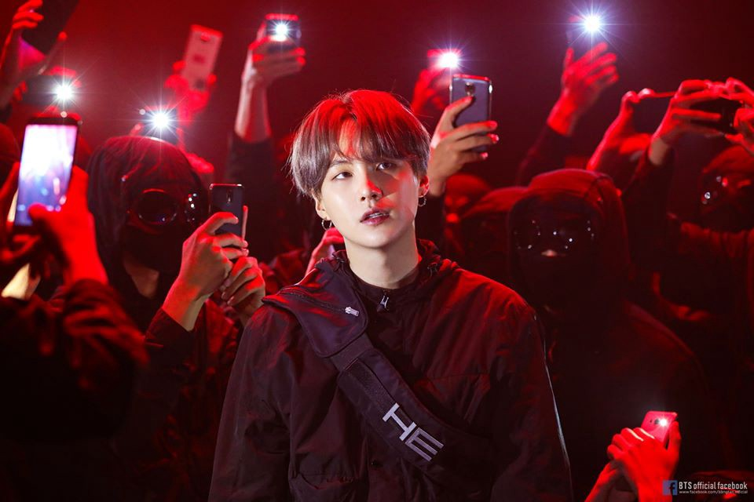
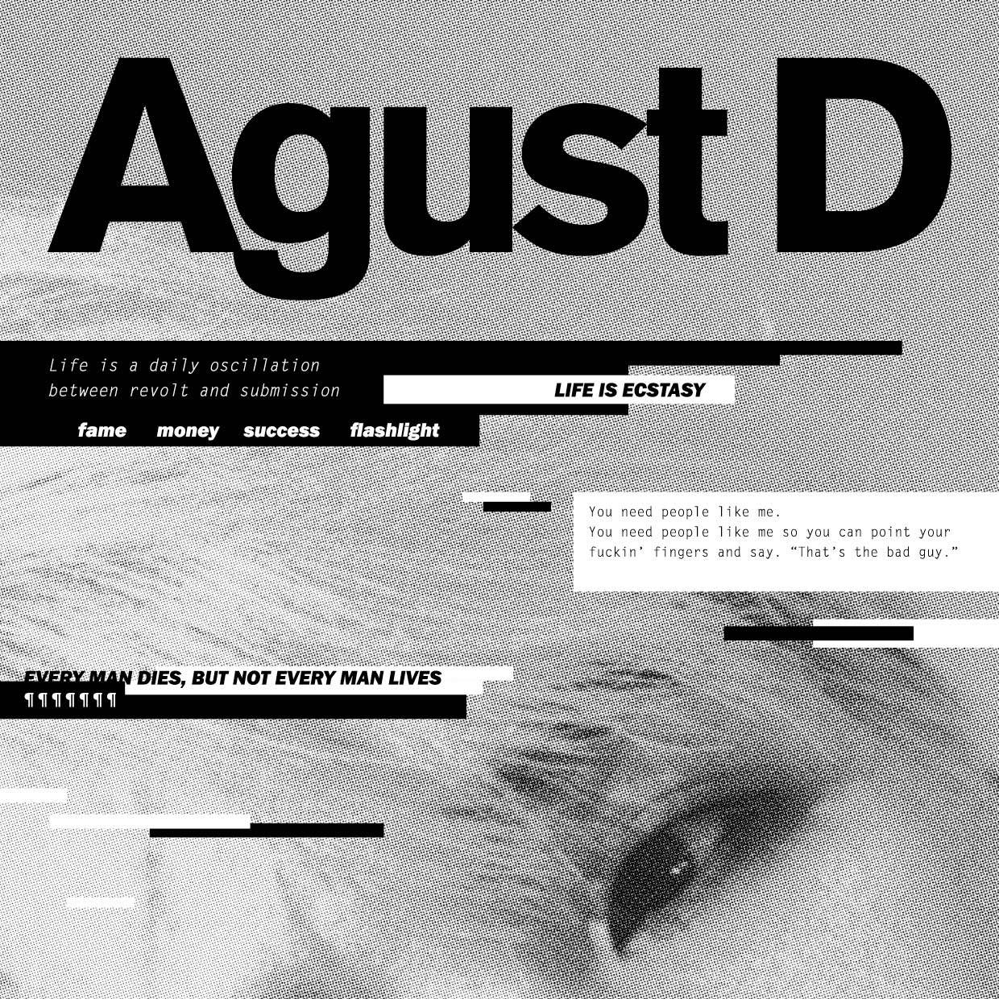

Sobre
Suga, cujo nome verdadeiro é Min Yoon Gi, nasceu a 9 de Março de 1993 na cidade de Daegu, no sudeste da Coreia do Sul. Começou a interessar-se pela música no quinto ano de ensino, após ver uma actuação de Stony Skunk na televisão, e foi também assim que começou a escutar a grupos hip-hop como Epik High.
No segundo curso da escola média actuou pela primeira vez num palco interpretando o tema «Go Back» do grupo Dynamic Duo. Aos treze anos começou a aprender a utilizar a tecnologia MIDI e a escrever suas próprias canções.
Aos dezessete anos, e graças a um mentor, passou a fazer parte de um grupo de rap underground chamado D-Town. Numa entrevista à revista Grazia declarou que «Quando trabalhava no estúdio, compunha canções ou fazia ritmos, e até os vendia. Depois comecei a fazer rap e a actuar naturalmente. Enquanto trabalhava ali era difícil pagar a comida ou o transporte. (...) Mas ainda sendo difícil, queria fazer música, de modo que o suportava».
Em 2010, Suga participou nas audicões Hit It levadas a cabo por BigHit Entertainment. Ficou em segundo na competição que se celebrou, passando a fazer parte da companhia a 7 de Novembro de 2010.[8] Apesar de ter entrado em Big Hit como compositor, a 13 de Junho de 2013 acabou começando com o grupo BTS como rapper com o solo 2 Cool 4 Scool.[2]
Suga confessou que seu irmão mais velho teve um papel importante na sua carreira musical, ao ser o único membro da família que o tinha apoiado quando se decidiu apresentar à audição de BigHit. Chegou a escrever o tema «Never Mind», incluído no álbum The Most Beautiful Moment in Life, Part 2, sobre o desprezo de sua família ao seu desejo de ser músico.[9] O pseudónimo "Agust D" vem de «DT Suga» ao inverso, o nome que utilizava quando começou a escrever letras, onde «DT» significa «Daegu Town».
Musicas

DAEWCHITA
Descrita como um interlúdio entre os primeiros trabalhos do grupo e sua etapa atual, o mv de Shadow também revisita o passado do Bangtan, mostrando na tela grafismos como os caracteres O!RUL8,2?, nome do seu primeiro mini álbum de estúdio dele, lançado em 2013. A tal ‘Sombra’, que é um dos arquétipos que o psiquiatra suíço Carl Jung utilizou em sua obra, pode ser descrita como “tudo aquilo que se encontra no nosso Inconsciente e precisa ser melhorado”, segundo o pensador. Parece que o BTS está fazendo uma autoanálise sobre toda a sua trajetória.

SHADOW
O termo "Daechwita" refere-se ao estilo musical de "grandes sopros e pancadas" que remonta da época do final da dinastia Joseon (1392-1897) no que hoje e o território da Coreia do Sul. A daechwita mescla batidas ao som dos instrumentos musicais tradicionais coreanos. Atualmente, e tocada na troca da guarda em dois palácios em Seul.
Parcerias
Colaboração de Suga com a cantora solista sul-coreana IU

Colaboração de Suga com a cantora solista Suran
Empresa
HYBE Corporation (em coreano: 빅히트 엔터테인먼트; estilizado como HYBE) é uma empresa sul-coreana de entretenimento, plataforma e negócios, fundada em 2005 por Bang Si-hyuk sob o nome Big Hit Entertainment.[2] A empresa possui várias subsidiárias, dentre elas, Big Hit Music, Source Music, Pledis Entertainment, Belift Lab, HYBE Labels Japan e KOZ Entertainment, coletivamente conhecidas como HYBE Labels.